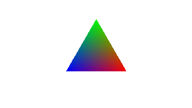

| Copyright | Written by David Himmelstrup |
|---|---|
| License | Unlicense |
| Maintainer | lemmih@gmail.com |
| Stability | experimental |
| Portability | POSIX |
| Safe Haskell | None |
| Language | Haskell2010 |
Reanimate.Builtin.TernaryPlot
Description
Implementation of ternary plots: https://en.wikipedia.org/wiki/Ternary_plot
Synopsis
- type ACoord = Double
- type BCoord = Double
- type CCoord = Double
- ternaryPlot :: Int -> (ACoord -> BCoord -> CCoord -> PixelRGBA8) -> Tree
- toCartesianCoords :: ACoord -> BCoord -> (Double, Double)
- toOffsetCartesianCoords :: ACoord -> BCoord -> (Double, Double)
- fromCartesianCoords :: Double -> Double -> (ACoord, BCoord, CCoord)
Documentation
Arguments
| :: Int | Pixels in the X-axis. More pixels => higher quality. |
| -> (ACoord -> BCoord -> CCoord -> PixelRGBA8) | a+b+c=1. A=1 is the left-most position, B=1 is the top-most position, and C=1 is the right-most position. |
| -> Tree |
Creates a centered ternary plot with a width of 5.
Example:
ternaryPlot100 $ \aCoord bCoord cCoord ->promotePixel$ let red = round $ aCoord*255 green = round $ bCoord*255 blue = round $ cCoord*255 in PixelRGB8 red green blue

toCartesianCoords :: ACoord -> BCoord -> (Double, Double) Source #
Compute the XY coordinates from ternary coordinates.
Note that CCoord is given because a+b+c=1.